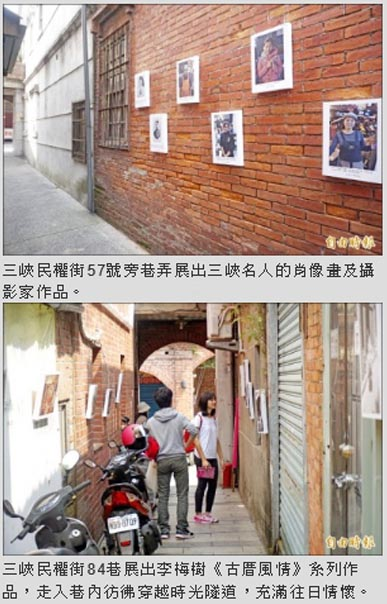

三峽老街名人巷 露天美展憶往
張安蕎｜自由時報／新北都會生活｜2016年4月8日
三峽民權街八十四巷、五十七號旁巷弄，看似不起眼，卻是台灣第一位女鎮長林美雪、抗日義軍統領蘇力等人的故居。今年適逢老街一百週年，「梅樹月藝術祭」特別在這兩條巷弄舉辦露天的「巷弄美展」，三峽名人的肖像畫及攝影家作品懸掛在磚牆上，讓人們走進巷弄時，也能不經意地邂逅藝術。
民權街八十四巷曾是電影《長巷》的拍片場景，台灣第一位民選女鎮長林美雪的故居就在巷口；巷尾則是大溪聞人簡阿牛的宅邸「挹翠樓」，這棟古厝雖已荒廢，但在日治時期可是能媲美「帝寶」的豪宅！
李梅樹紀念館執行長李景文表示，李梅樹夫人林粒的娘家故居也在巷中，李家對於此巷有著滿滿的昔日回憶；巷內牆面展出李梅樹「古厝風情」系列作品，同時展出攝影大師張才的三峽行旅作品，走入巷內彷彿穿越時光隧道，充滿往日情懷。
另外，台灣第一家英文雜誌社創辦人陳國政、抗日義軍統領蘇力與愛鄰醫院院長陳重明的故居，剛好與民權街五十七號形成犄角之勢，此次也特別在巷中展出李梅樹為三人所繪的肖像畫；同時展示攝影家趙浩宏作品，當代與現代藝術家跨時空同台展出，形成有趣的巷仔景觀。展覽至廿四日止，不限時段皆可參觀。